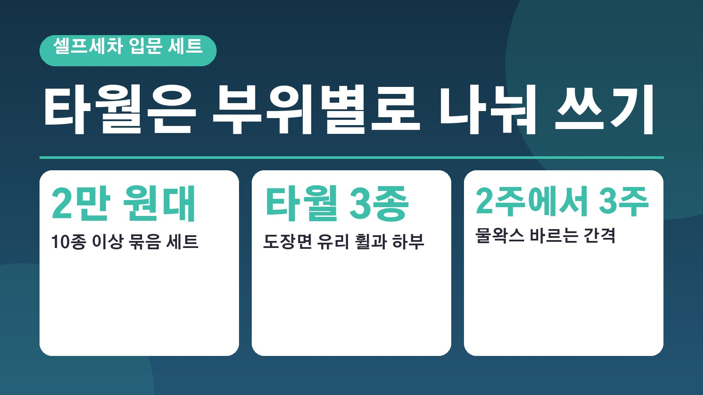
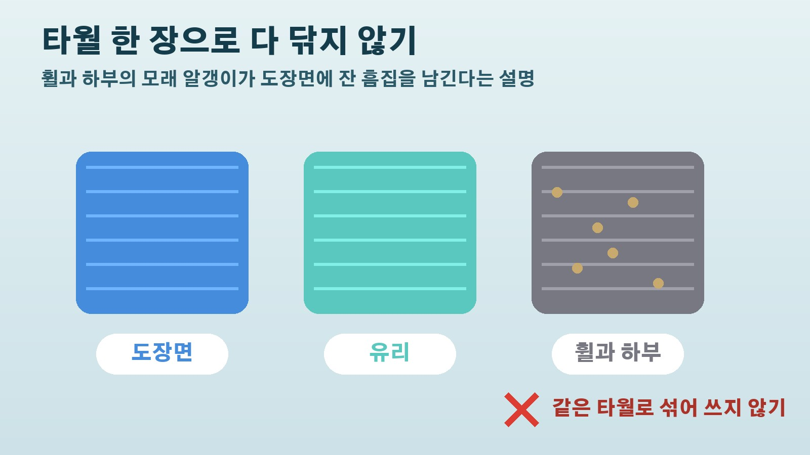

셀프세차 입문 세트는 2만 원대, 타월 한 장으로 휠까지 닦으면 흠집이 남는 이유

셀프세차장에 처음 가 보려고 하면 무엇부터 챙겨야 할지 막막하죠. 진열대에 타월과 브러시, 왁스가 잔뜩 있는데 하나하나 사자니 돈이 꽤 들 것 같고요. 재경일보가 10월 17일 셀프세차 입문자를 위한 세차용품 세트를 비교한 기사를 냈는데, 상품 비교뿐 아니라 처음 세차할 때 흔히 하는 실수와 도구 관리법까지 담겨 있어서 쓸 만한 부분만 골라 정리해 봤습니다.
처음이라면 10종 이상 묶음 세트부터
기사는 셀프세차가 처음이라면 타월부터 브러시까지 한 번에 들어 있는 10종 이상의 세트를 고르는 것이 비용과 시간을 아끼는 가장 빠른 길이라고 정리했습니다. 기본 타월과 워시미트, 브러시가 모두 들어 있는 올인원 세트 하나로 시작하는 쪽이 가성비 면에서 합리적이라는 거예요. 도구가 늘어날수록 트렁크가 어지러워지기 쉬우니 전용 툴백이나 수납공간도 함께 생각해 두라는 조언도 붙어 있었습니다.
기사에 나온 세트 구성과 가격대
기사는 쿠팡 검색 결과 순으로 다섯 가지를 소개했습니다. 2만 원대 초반의 12종 세트, 2만 원대의 11종 세트, 같은 11종 세트를 두 개 묶은 구성이 있었고, 차가 두 대인 집이라면 두 세트 묶음이 넉넉하다고 했어요. 여기에 트렁크 정리를 위한 검은색 세차 툴백, 그리고 4천 원대의 물왁스가 함께 올라 있었습니다. 가격은 10월 17일 기사 기준이라 실제 구매할 때는 다시 확인해 보시는 게 좋겠습니다.
타월 한 장으로 다 닦으면 생기는 일
입문자가 가장 흔히 하는 실수로 기사가 꼽은 것은 타월 한 장으로 도장면과 휠, 하부까지 전부 닦는 습관입니다. 휠이나 하부에 묻은 거친 모래 알갱이가 타월에 남아 있다가 다른 곳을 닦을 때 도장면에 잔 흠집을 낸다는 설명이에요. 그래서 도장면용 드라잉 타월, 유리 전용 타월, 휠과 하부 전용 타월을 따로 나눠 보관하고 쓰라고 권했습니다.

섬유유연제는 빼고 그늘에서 말리기
도구는 세차 뒤 어떻게 빨고 보관하느냐에 따라 수명이 갈린다고 합니다. 마이크로화이버 타월이나 워시미트는 중성세제로 미지근한 물에서 따로 빨고, 섬유유연제는 쓰지 말라는 게 핵심이에요. 섬유유연제가 실의 흡수력을 떨어뜨려 물기를 닦아 내는 힘이 크게 약해지기 때문입니다. 세탁기를 쓴다면 중성세제로 단독 울코스 세탁은 괜찮다고 했고, 빨고 난 뒤에는 햇볕을 피해 바람이 잘 통하는 그늘에서 완전히 말려야 곰팡이와 냄새를 막을 수 있다고 합니다. 보관은 바람이 통하는 전용 가방에 넣어 두면 좋다고 하네요.
물왁스는 물기를 닦은 뒤 얇게
세트에 자주 들어가는 물왁스는 마지막 단계에서 쓰는 제품입니다. 고압수와 샴푸 세차를 마치고 드라잉 타월로 물기를 완전히 닦은 다음, 얇게 뿌리고 버핑 타월로 가볍게 펴 바르면 된다고 해요. 고체 왁스보다 작업 시간이 훨씬 짧아 바쁜 분이나 입문자에게 맞고, 2주에서 3주 간격으로 꾸준히 발라 주면 다음 세차 때 오염물이 더 쉽게 떨어진다고 합니다.
참고한 기사: 재경일보 2026 차량용 세차용품 추천 가성비 입문 세트 비교 2026년 10월 17일
태그
셀프세차 세차용품 셀프세차입문 세차용품세트 세차타월 드라잉타월 물왁스 세차툴백 마이크로화이버 셀프세차장